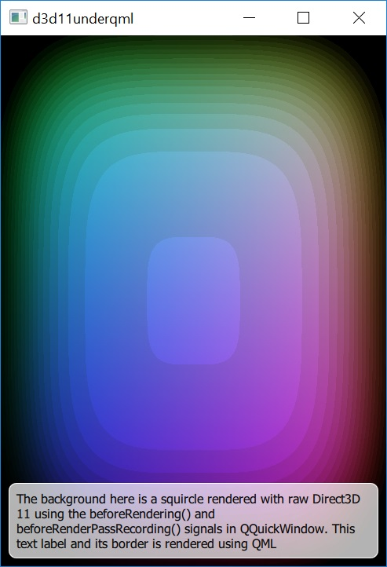

Scene Graph - Direct3D 11 Under QML
Shows how to render directly with Direct3D 11 under a Qt Quick scene.

The Direct3D 11 Under QML example shows how an application can make use of the QQuickWindow::beforeRendering() signal to draw custom D3D11 content under a Qt Quick scene. This signal is emitted at the start of every frame, before the scene graph starts its rendering, thus any D3D11 draw calls that are made as a response to this signal, will stack under the Qt Quick items.
As an alternative, applications that wish to render D3D11 content on top of the Qt Quick scene, can do so by connecting to the QQuickWindow::afterRendering() signal.
In this example, we will also see how it is possible to have values that are exposed to QML which affect the D3D11 rendering. We animate the threshold value using a NumberAnimation in the QML file and this value is used by the HLSL shader program that draws the squircles.
The example is equivalent in most ways to the OpenGL Under QML, Metal Under QML, and Vulkan Under QML examples, they all render the same custom content, just via different native APIs.